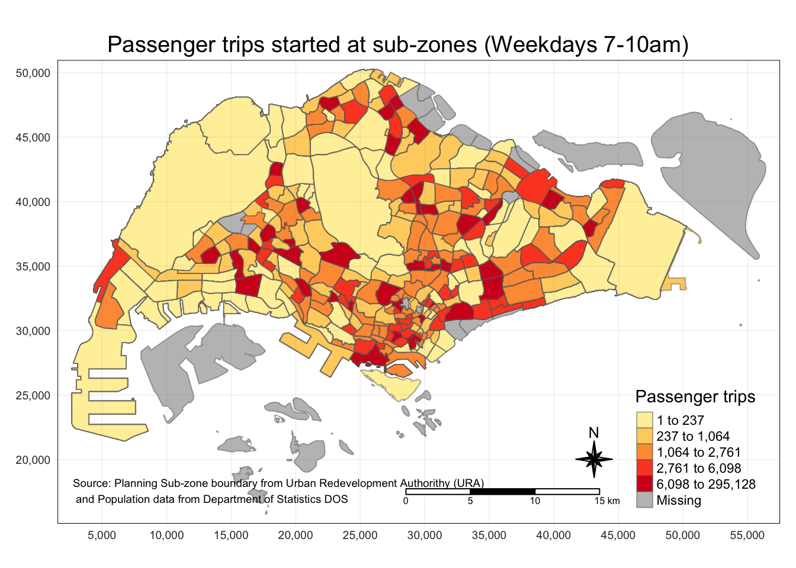
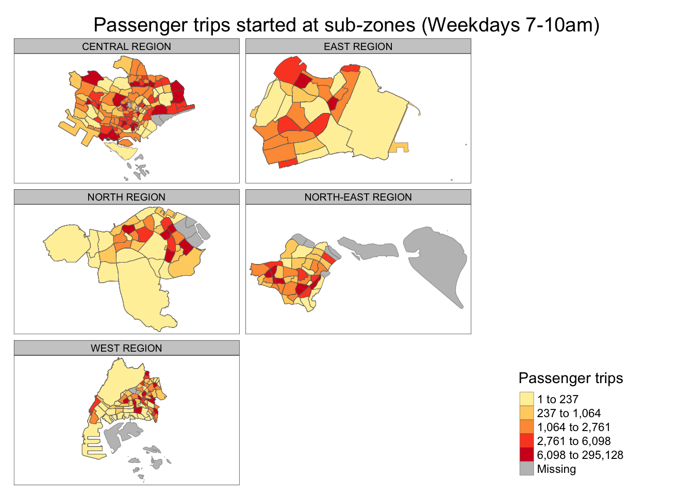

pacman::p_load(tmap, sf, tidyverse)In-class Exercise 1: Bus Commuter Flow by Origin
Overview
In this exercise, we will learn how to create choropleth map from bus data and commuter data.
Getting Started
The code chunk below loads the following packages:
tmap: for thematic mapping
sf: for geospatial data handling
tidyverse: for non-spatial data handling
Preparing the Flow Data
Importing the origin and destination data
Firstly, we will import the Passenger Volume By Origin Destination Bust Stops data set from LTA Data Mall by using read_csv .
odbus <- read_csv("data/aspatial/origin_destination_bus_202308.csv")To make it easier to process the PT codes, we will convert the origin and destination PT codes to factor data type.
odbus$ORIGIN_PT_CODE <- as.factor(odbus$ORIGIN_PT_CODE)
odbus$DESTINATION_PT_CODE <- as.factor(odbus$DESTINATION_PT_CODE)Next, I want to investigate the commuter flows between 7-10am on weekdays.
Tip
We need to use the interval 7 <= time <= 9 as the data with time = 9 contains data from 9am to just before 10am.
origin7_9 <- odbus %>%
filter(DAY_TYPE == "WEEKDAY") %>%
filter(TIME_PER_HOUR >= 7 &
TIME_PER_HOUR <= 9) %>%
group_by(ORIGIN_PT_CODE) %>%
summarise(TRIPS = sum(TOTAL_TRIPS))Next, we save the data in rds format for future use.
Important
In order for the code below to work, we need to create the rds/ directory under data/.
write_rds(origin7_9, "data/rds/origin7_9.rds")It can be imported back later on with read_rds().
origin7_9 <- read_rds("data/rds/origin7_9.rds")Importing geospatial data
Next we need to import the bus stop locations so that we can correlate them from the PT codes from the origin and destination data from before.
busstop <- st_read(dsn = "data/geospatial",
layer = "BusStop") %>%
st_transform(crs=3414)Reading layer `BusStop' from data source
`/Users/kjcpaas/Documents/Grad School/ISSS624/Project/ISSS624/In-class_Ex1/data/geospatial'
using driver `ESRI Shapefile'
Simple feature collection with 5161 features and 3 fields
Geometry type: POINT
Dimension: XY
Bounding box: xmin: 3970.122 ymin: 26482.1 xmax: 48284.56 ymax: 52983.82
Projected CRS: SVY21Since these are just points, we also need some polygon data to figure out where in the Singapore map the bus locations correspond to:
mpsz <- st_read(dsn = "data/geospatial",
layer = "MPSZ-2019") %>%
st_transform(crs = 3414)Reading layer `MPSZ-2019' from data source
`/Users/kjcpaas/Documents/Grad School/ISSS624/Project/ISSS624/In-class_Ex1/data/geospatial'
using driver `ESRI Shapefile'
Simple feature collection with 332 features and 6 fields
Geometry type: MULTIPOLYGON
Dimension: XY
Bounding box: xmin: 103.6057 ymin: 1.158699 xmax: 104.0885 ymax: 1.470775
Geodetic CRS: WGS 84Data Wrangling
After importing all the needed data into RStudio, we can proceed with data wrangling.
Combining busstop and mpsz
We first combine that 2 data frames by figuring out which polygon in mpsz each points in busstop are contained in.
busstop_mpsz <- st_intersection(busstop, mpsz) %>%
select(BUS_STOP_N, SUBZONE_C) %>%
st_drop_geometry()
glimpse(busstop_mpsz)Rows: 5,156
Columns: 2
$ BUS_STOP_N <chr> "13099", "13089", "06151", "13211", "13139", "13109", "1311…
$ SUBZONE_C <chr> "RVSZ05", "RVSZ05", "SRSZ01", "SRSZ01", "SRSZ01", "SRSZ01",…
Note
st_intersection()is used to perform point and polygon overly and the output will be in point sf object.select()of dplyr package is then use to retain only BUS_STOP_N and SUBZONE_C in the busstop_mpsz sf data frame.st_drop_geometry()removes the geometry from the data frame, making the data aspatial.
Tip
busstop_mpsz has 5 less items than busstop. This is because these bus stops are outside of Singapore 🇸🇬 border.
For example, some bus routes start/end in Johor Bahru in Malaysia 🇲🇾.
Finally, we now now which subzone each bus stop is located in.
Before proceeding, we should save the busstop_mpsz so we won’t need to recalculate it later on.
write_rds(busstop_mpsz, "data/rds/busstop_mpsz.csv")Next is to join the busstop_mpsz data with origin7_9.
origin_data <- left_join(origin7_9 , busstop_mpsz,
by = c("ORIGIN_PT_CODE" = "BUS_STOP_N")) %>%
rename(ORIGIN_BS = ORIGIN_PT_CODE,
ORIGIN_SZ = SUBZONE_C)Next is to check for duplicate records.
duplicate <- origin_data %>%
group_by_all() %>%
filter(n()>1) %>%
ungroup()
glimpse(duplicate)Rows: 26
Columns: 3
$ ORIGIN_BS <chr> "11009", "11009", "22501", "22501", "43709", "43709", "47201…
$ TRIPS <dbl> 13826, 13826, 9743, 9743, 1118, 1118, 23998, 23998, 6218, 62…
$ ORIGIN_SZ <chr> "QTSZ01", "QTSZ01", "JWSZ09", "JWSZ09", "BKSZ07", "BKSZ07", …In this case, there are some duplicates so we need to clean it up further. This can be done using unique().
origin_data <- unique(origin_data)Let’s check if the duplicates have been removed.
duplicate <- origin_data %>%
group_by_all() %>%
filter(n()>1) %>%
ungroup()
glimpse(duplicate)Rows: 0
Columns: 3
$ ORIGIN_BS <chr>
$ TRIPS <dbl>
$ ORIGIN_SZ <chr> The duplicates have been removed so we can proceed with merging origin_data with mpsz to figure out the subzone names on the bus stop locations.
mpsz_origtrip <- left_join(mpsz,
origin_data,
by = c("SUBZONE_C" = "ORIGIN_SZ"))Before proceeding, let’s save this data as rds.
write_rds(origin7_9, "data/rds/origin7_9.rds")Choropleth Mapping
Finally, we can generate a map for the bus trip origins.
tm_shape(mpsz_origtrip)+
tm_fill("TRIPS",
style = "quantile",
palette = "YlOrRd",
title = "Passenger trips") +
tm_layout(main.title = "Passenger trips started at sub-zones (Weekdays 7-10am)",
main.title.position = "center",
main.title.size = 1.2,
legend.height = 0.45,
legend.width = 0.35,
frame = TRUE) +
tm_borders(alpha = 0.5) +
tm_compass(type="8star", size = 2) +
tm_scale_bar() +
tm_grid(alpha = 0.1) +
tm_credits("Source: Planning Sub-zone boundary from Urban Redevelopment Authorithy (URA)\n and Population data from Department of Statistics DOS",
position = c("left", "bottom"))
We can also map it by region easier comparison.
tm_shape(mpsz_origtrip) +
tm_fill("TRIPS",
style = "quantile",
palette = "YlOrRd",
thres.poly = 0,
title = "Passenger trips") +
tm_facets(by="REGION_N",
ncol = 2,
free.coords=TRUE,
drop.units=TRUE) +
tm_layout(main.title = "Passenger trips started at sub-zones (Weekdays 7-10am)",
main.title.position = "center",
main.title.size = 1.2,
title.position = c("center", "center"),
title.size = 20,
legend.height = 0.45,
legend.width = 0.35,
legend.position = c("center", "bottom")) +
tm_borders(alpha = 0.5)
Note
From these maps, we can infer that Central Region has the most bus trips started between 7-10am.
It makes sense as many business activities happen within this region so it is expected that many transport activities also happen. These activities can be attributed to workers taking a bus from their homes, or taking a bus for the final leg of their commute to the office, i.e., taking a train first then transferring to a bus.
Reflections
- This exercise gives a good structure on how a basic geospatial data analysis is done. I want to explore the mapping more.